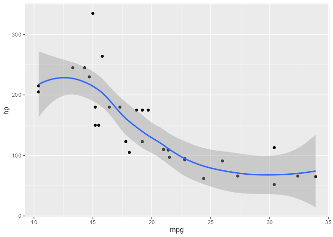

An experimental package for programmatically debugging ggproto methods with trace().
Installation
You can install the development version from GitHub with:
# install.packages("devtools")
devtools::install_github("yjunechoe/ggtrace")Usage
library(ggtrace)
library(ggplot2) # v3.3.5
#> Warning: package 'ggplot2' was built under R version 4.1.1Example 1 - PositionJitter$compute_layer {ggplot2}
jitter_plot <- ggplot(diamonds[1:1000,], aes(cut, depth)) +
geom_point(position = position_jitter(width = 0.2, seed = 2021))
jitter_plot
ggbody(PositionJitter$compute_layer)
#> [[1]]
#> `{`
#>
#> [[2]]
#> trans_x <- if (params$width > 0) function(x) jitter(x, amount = params$width)
#>
#> [[3]]
#> trans_y <- if (params$height > 0) function(x) jitter(x, amount = params$height)
#>
#> [[4]]
#> x_aes <- intersect(ggplot_global$x_aes, names(data))
#>
#> [[5]]
#> x <- if (length(x_aes) == 0) 0 else data[[x_aes[1]]]
#>
#> [[6]]
#> y_aes <- intersect(ggplot_global$y_aes, names(data))
#>
#> [[7]]
#> y <- if (length(y_aes) == 0) 0 else data[[y_aes[1]]]
#>
#> [[8]]
#> dummy_data <- new_data_frame(list(x = x, y = y), nrow(data))
#>
#> [[9]]
#> fixed_jitter <- with_seed_null(params$seed, transform_position(dummy_data,
#> trans_x, trans_y))
#>
#> [[10]]
#> x_jit <- fixed_jitter$x - x
#>
#> [[11]]
#> y_jit <- fixed_jitter$y - y
#>
#> [[12]]
#> transform_position(data, function(x) x + x_jit, function(x) x +
#> y_jit)
ggtrace(
method = PositionJitter$compute_layer,
trace_steps = c(1, 1, 8, 12),
trace_exprs = rlang::exprs(
head(data), # What does the data passed in look like?
params, # What do the initial parameters look like?
head(~line), # What is this `dummy_data` thing on Step 8?
head(~line) # What does the last line evaluate to?
# - i.e., what is returned by the method?
)
)
jitter_plot # plot not printed to save space
#> Tracing method compute_layer from <PstnJttr> ggproto.
#>
#> [Step 1]> head(data)
#> x y PANEL group
#> 1 5 61.5 1 5
#> 2 4 59.8 1 4
#> 3 2 56.9 1 2
#> 4 4 62.4 1 4
#> 5 2 63.3 1 2
#> 6 3 62.8 1 3
#>
#> [Step 1]> params
#> $width
#> [1] 0.2
#>
#> $height
#> [1] 0.04
#>
#> $seed
#> [1] 2021
#>
#>
#> [Step 8]> head(~line)
#> x y
#> 1 5 61.5
#> 2 4 59.8
#> 3 2 56.9
#> 4 4 62.4
#> 5 2 63.3
#> 6 3 62.8
#>
#> [Step 12]> head(~line)
#> x y PANEL group
#> 1 4.980507 61.50684 1 5
#> 2 4.113512 59.77872 1 4
#> 3 2.083873 56.86655 1 2
#> 4 3.952698 62.42703 1 4
#> 5 2.054530 63.29763 1 2
#> 6 3.080538 62.77536 1 3
#>
#> Untracing method compute_layer from <PstnJttr> ggproto.
#> Call `last_ggtrace()` to get the trace dump.Example 2 - StatSina$compute_panel {ggforce}
library(ggforce)
#> Warning: package 'ggforce' was built under R version 4.1.1
sina_plot <- ggplot(diamonds[diamonds$cut == "Good",][1:25,], aes(cut, depth)) +
geom_violin() +
geom_sina(seed = 2021)
sina_plot
ggbody(StatSina$compute_panel)
#> [[1]]
#> `{`
#>
#> [[2]]
#> if (!is.null(binwidth)) {
#> bins <- bin_breaks_width(scales$y$dimension() + 1e-08, binwidth)
#> } else {
#> bins <- bin_breaks_bins(scales$y$dimension() + 1e-08, bins)
#> }
#>
#> [[3]]
#> data <- ggproto_parent(Stat, self)$compute_panel(data, scales,
#> scale = scale, method = method, bw = bw, kernel = kernel,
#> bins = bins$breaks, maxwidth = maxwidth, adjust = adjust,
#> bin_limit = bin_limit)
#>
#> [[4]]
#> if (is.logical(scale)) {
#> scale <- if (scale)
#> "area"
#> else "width"
#> }
#>
#> [[5]]
#> data$sinawidth <- switch(scale, area = data$density/max(data$density),
#> count = data$density/max(data$density) * data$n/max(data$n),
#> width = data$scaled)
#>
#> [[6]]
#> if (!is.na(seed)) {
#> new_seed <- sample(.Machine$integer.max, 1L)
#> set.seed(seed)
#> on.exit(set.seed(new_seed))
#> }
#>
#> [[7]]
#> data$xmin <- data$x - maxwidth/2
#>
#> [[8]]
#> data$xmax <- data$x + maxwidth/2
#>
#> [[9]]
#> data$x_diff <- runif(nrow(data), min = -1, max = 1) * maxwidth *
#> data$sinawidth/2
#>
#> [[10]]
#> data$width <- maxwidth
#>
#> [[11]]
#> if (all(data$y == floor(data$y))) {
#> data$y <- jitter(data$y)
#> }
#>
#> [[12]]
#> data
ggtrace(
method = "compute_panel",
obj = StatSina,
trace_steps = c(1, 12),
trace_exprs = rlang::expr(data), # evaluated at Step 1 and Step 12
.print = FALSE
)
sina_plot # plot not printed to save space
#> Tracing method compute_panel from <StatSina> ggproto.
#>
#> [Step 1]> data
#>
#> [Step 12]> data
# Sometimes doesn't automatically untrace so this may be required
untrace("compute_panel", where = StatSina)
#> Untracing function "compute_panel" in package ".GlobalEnv"
last_ggtrace()
#> $`[Step 1]> data`
#> x y PANEL group
#> 1 1 56.9 1 1
#> 2 1 63.3 1 1
#> 3 1 64.0 1 1
#> 4 1 63.4 1 1
#> 5 1 63.8 1 1
#> 6 1 63.3 1 1
#> 7 1 58.2 1 1
#> 8 1 64.1 1 1
#> 9 1 64.0 1 1
#> 10 1 65.2 1 1
#> 11 1 58.4 1 1
#> 12 1 63.1 1 1
#> 13 1 63.8 1 1
#> 14 1 63.2 1 1
#> 15 1 63.7 1 1
#> 16 1 57.9 1 1
#> 17 1 57.5 1 1
#> 18 1 59.4 1 1
#> 19 1 62.1 1 1
#> 20 1 59.2 1 1
#> 21 1 64.6 1 1
#> 22 1 59.7 1 1
#> 23 1 63.8 1 1
#> 24 1 57.8 1 1
#> 25 1 64.1 1 1
#>
#> $`[Step 12]> data`
#> x y PANEL group density scaled width n sinawidth xmin xmax
#> 1 1 56.9 1 1 0.06161965 0.3497890 0.9 25 0.3498232 0.55 1.45
#> 2 1 63.3 1 1 0.16892697 0.9589278 0.9 25 0.9590217 0.55 1.45
#> 3 1 64.0 1 1 0.17293663 0.9816890 0.9 25 0.9817851 0.55 1.45
#> 4 1 63.4 1 1 0.17190008 0.9758049 0.9 25 0.9759004 0.55 1.45
#> 5 1 63.8 1 1 0.17590431 0.9985352 0.9 25 0.9986329 0.55 1.45
#> 6 1 63.3 1 1 0.16892697 0.9589278 0.9 25 0.9590217 0.55 1.45
#> 7 1 58.2 1 1 0.08982467 0.5098971 0.9 25 0.5099470 0.55 1.45
#> 8 1 64.1 1 1 0.17023630 0.9663603 0.9 25 0.9664549 0.55 1.45
#> 9 1 64.0 1 1 0.17293663 0.9816890 0.9 25 0.9817851 0.55 1.45
#> 10 1 65.2 1 1 0.10449007 0.5931464 0.9 25 0.5932045 0.55 1.45
#> 11 1 58.4 1 1 0.08989340 0.5102873 0.9 25 0.5103372 0.55 1.45
#> 12 1 63.1 1 1 0.16086940 0.9131884 0.9 25 0.9132777 0.55 1.45
#> 13 1 63.8 1 1 0.17590431 0.9985352 0.9 25 0.9986329 0.55 1.45
#> 14 1 63.2 1 1 0.16522038 0.9378870 0.9 25 0.9379788 0.55 1.45
#> 15 1 63.7 1 1 0.17614511 0.9999022 0.9 25 1.0000000 0.55 1.45
#> 16 1 57.9 1 1 0.08730852 0.4956140 0.9 25 0.4956625 0.55 1.45
#> 17 1 57.5 1 1 0.07970482 0.4524509 0.9 25 0.4524952 0.55 1.45
#> 18 1 59.4 1 1 0.07423288 0.4213890 0.9 25 0.4214303 0.55 1.45
#> 19 1 62.1 1 1 0.09876785 0.5606638 0.9 25 0.5607186 0.55 1.45
#> 20 1 59.2 1 1 0.07891770 0.4479828 0.9 25 0.4480266 0.55 1.45
#> 21 1 64.6 1 1 0.14645910 0.8313871 0.9 25 0.8314685 0.55 1.45
#> 22 1 59.7 1 1 0.06677863 0.3790744 0.9 25 0.3791115 0.55 1.45
#> 23 1 63.8 1 1 0.17590431 0.9985352 0.9 25 0.9986329 0.55 1.45
#> 24 1 57.8 1 1 0.08583966 0.4872759 0.9 25 0.4873236 0.55 1.45
#> 25 1 64.1 1 1 0.17023630 0.9663603 0.9 25 0.9664549 0.55 1.45
#> x_diff
#> 1 -0.01534303
#> 2 0.24493587
#> 3 0.18527659
#> 4 -0.10386524
#> 5 0.12252367
#> 6 0.17378568
#> 7 0.06445477
#> 8 -0.20294417
#> 9 0.27870853
#> 10 0.25785897
#> 11 -0.21712788
#> 12 0.27740022
#> 13 0.09278963
#> 14 0.05694285
#> 15 0.28804753
#> 16 -0.11082312
#> 17 0.00223742
#> 18 0.13940252
#> 19 0.23121986
#> 20 0.01842641
#> 21 -0.26970952
#> 22 0.15536192
#> 23 -0.09662331
#> 24 -0.10154036
#> 25 0.06280618